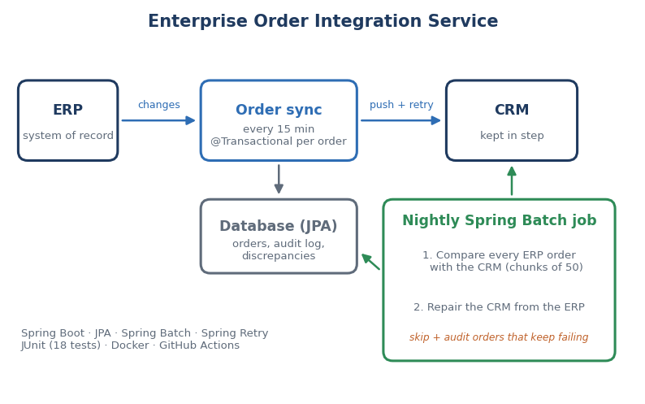
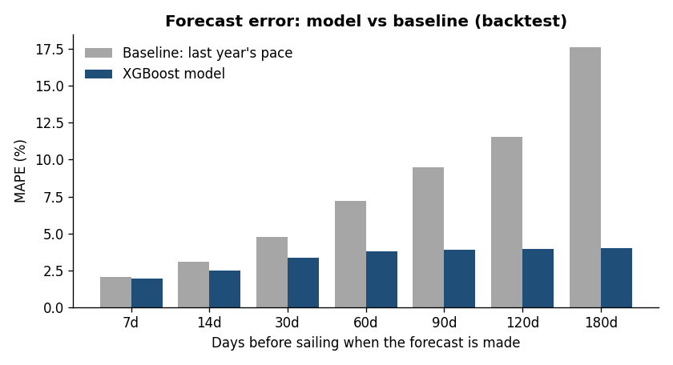

A Spring Boot service that keeps orders consistent between an ERP (the system of record) and a CRM. It's a common enterprise integration problem: two systems hold the same orders, and they drift apart when a call fails or someone edits one side. The ERP and CRM are simulated in memory behind Java interfaces, so the service runs anywhere, and real clients could be plugged in without changing the rest of the code.
What it does
Every 15 minutes, pulls changed orders from the ERP and saves each one in its own database transaction, together with an audit record.
Pushes each change to the CRM with automatic retries and exponential backoff (Spring Retry). If the CRM stays down, the order is marked pending instead of blocking the sync.
Every night, a Spring Batch job compares every ERP order with the CRM in chunks of 50, records each difference, and repairs the CRM. An order that keeps failing is skipped and logged, so one bad record doesn't stop the run.
Provides a REST API to run the sync or the reconciliation on demand and to view orders, differences and the audit log.
Builds, tests and packages a Docker image on every push with GitHub Actions, and includes a Docker Compose setup with PostgreSQL.
Results
On the demo data (200 orders, with the CRM copy missing 10 orders and out of date on 8), the first reconciliation found and repaired all 18, and a second run found none.
18 JUnit tests, including one that proves a failed audit write rolls back the order change, and an end-to-end test of the real Spring Batch job.

How the sync and the nightly reconciliation fit together
Design decisions
One transaction per order, so one bad order doesn't roll back the others.
The order change and its audit record commit together, so the audit log can never miss a change.
CRM calls happen outside the database transaction, so a slow CRM never holds database locks.
A sync watermark saved only at the end: if a sync crashes halfway, the next run safely re-processes those orders.
Money compared with BigDecimal.compareTo, so 10.0 and 10.00 aren't reported as different, and optimistic locking with @Version.
Limits
The ERP and CRM are simulated in memory, and the service runs locally and in Docker rather than in a production environment. Next steps would be Flyway migrations, Testcontainers tests against real PostgreSQL, and an outbox table so a CRM push survives an app crash.
Other Projects

Cruise Cabin Pricing & Demand Forecasting
Forecasts Royal Caribbean's real revenue per guest per day from ten years of SEC filings, with 1.2% error. Also includes a demand forecast and a pricing A/B test on 510K synthetic bookings calibrated to those filings.
An analysis of 119,390 real hotel bookings: SQL on cancellations and lost revenue, a cancellation model built without leaky features (ROC AUC 0.83), and overbooking and deposit recommendations.
Aircraft Logistics Management System (US Air Force)
A Django web app my team of three built from scratch for an Air Force logistics team. It schedules aircraft maintenance, tracks parts inventory and imports old maintenance logs, cutting manual work by 40%.